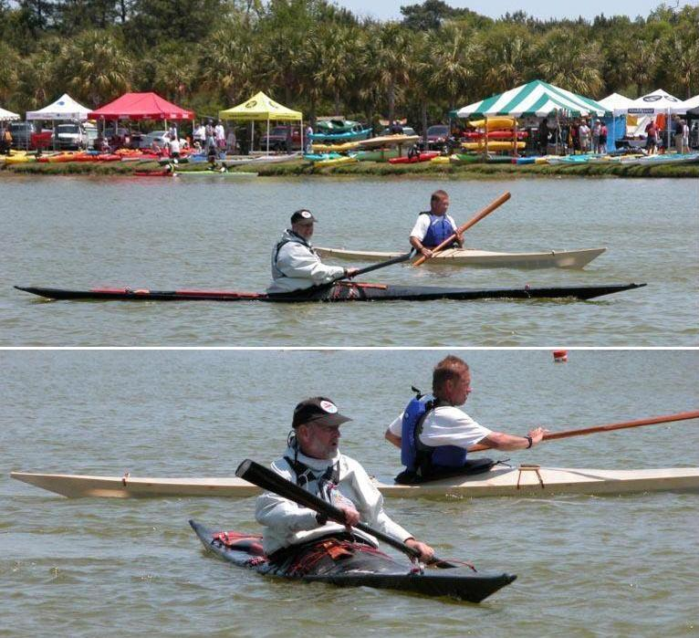

| Sea Rover - Mark Molina | Menu Last Page Next Page |
|
 Mark paddles his Sea Rover at a recent rolling clinc. You don't sit in a Sea Rover, you wear it ! Mark and Becky competed in the 2004 Greenland National Championship paddling a Sea Rover. Use the (BACK) key to return. |
|